无限 Mohr-Coulomb 介质中的圆柱孔
问题描述
注意
要在 FLAC3D 中查看此工程，请使用菜单命令 。选择“VerificationProblems/CylinderInMohrCoulomb”，再选择“CylinderInMohrCoulomb.f3prj”即可加载。本示例末尾给出了用于六面体网格单元和关联流动的数据文件（data files）的代表性样本。其余数据文件可在该工程中找到。
针对无限弹塑性材料中圆柱孔在原位应力作用下的情形，以数值方法确定应力和位移。假定材料为线弹性—理想塑性，破坏面由 Mohr-Coulomb 准则定义，并采用关联（剪胀角 = 摩擦角）和非关联（剪胀角 = 0）两种流动法则。将模拟结果与解析解进行比较。
本问题检验 FLAC3D 中施加平面应变条件下的 Mohr-Coulomb 塑性模型。
为该 Mohr-Coulomb 材料指定若干性质：
| 剪切模量（\(G\)） | 2.8 GPa |
| 体积模量（\(K\)） | 3.9 GPa |
| 黏聚力（\(c\)） | 3.45 MPa |
| 摩擦角（\(\phi\)） | 30° |
| 剪胀角（\(\psi\)） | 0° 和 30° |
各向同性原位应力的大小为 -30 MPa，孔内压力可忽略。（按照惯例，压应力为负。）孔的半径 \(a\) 相对于圆柱长度较小，因此适用平面应变条件。
闭式解
该问题的解析解见 Salençon（1969）。屈服区半径 \(R_0\) 一般可表示为
其中 \(a\) 为孔半径，\(P_0\) 为原位各向同性应力的绝对值，\(P_i\) 为孔内压力（本例中为 0 Pa），且
弹塑性交界处的径向应力可写为
塑性区的应力具有以下形式
其中 \(r\) 为距孔轴线的距离。
弹性区的应力为
弹性区的位移为
而在塑性区为
其中
以及
在这些公式中，\(\nu\) 为泊松比，\(\psi\) 为剪胀角，\(G\) 为剪切模量。
FLAC3D Model
为便于建模，问题由图 1（Figure 1） 所示的域定义，其中利用了 1/4 对称几何。选取一套参考坐标轴，其方位如图中所示，原点位于孔轴线与该域前面的交点。远处的 \(x\) 和 \(z\) 边界位于距孔轴线五个孔直径处。该域的厚度取为孔直径的十分之一。
施加于该域的边界条件绘于图 2（Figure 2）。该域离散为一层 900 个网格单元。网格单元按径向模式组织，如图 3（Figure 3） 所示。
在数值模拟中，首先在整个域内施加初始应力状态（对应于 \(P_0\) = 30 MPa），然后移除孔。

图 1：FLAC3D 模拟的域——1/4 对称。

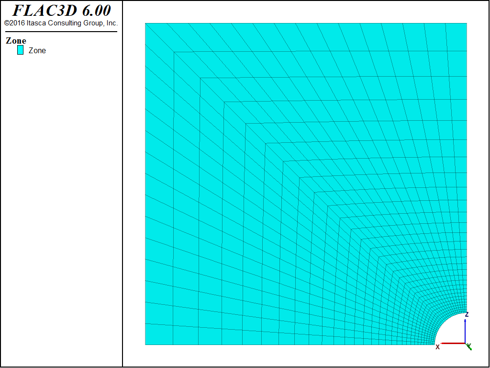
图 2：FLAC3D 分析的边界条件——1/4 对称。

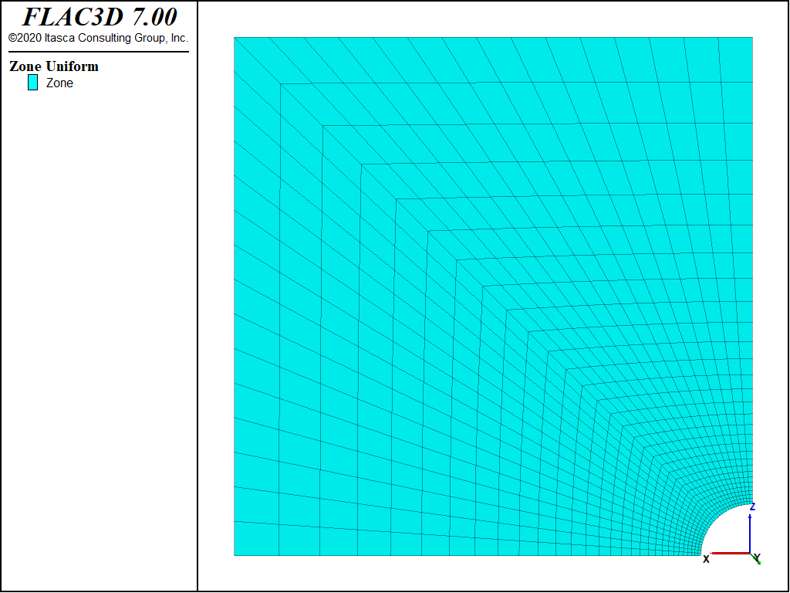
图 3：FLAC3D 网格——1/4 对称。
结果与讨论
图 4（Figure 4） 至图 7（Figure 7） 给出了沿径向线的 FLAC3D 结果与解析解的比较。归一化应力 \(-{\sigma}_r/P_0\) 和 \(-{\sigma}_{\theta}/P_0\) 随归一化半径 \(r/a\) 的变化绘于图 4（Figure 4） 和 图 5（Figure 5），而归一化位移 \(-u_r/a\) 随 \(r/a\) 的变化绘于图 6（Figure 6） 和 图 7（Figure 7）。请注意，两种流动法则的数值应力值在图上无法区分。

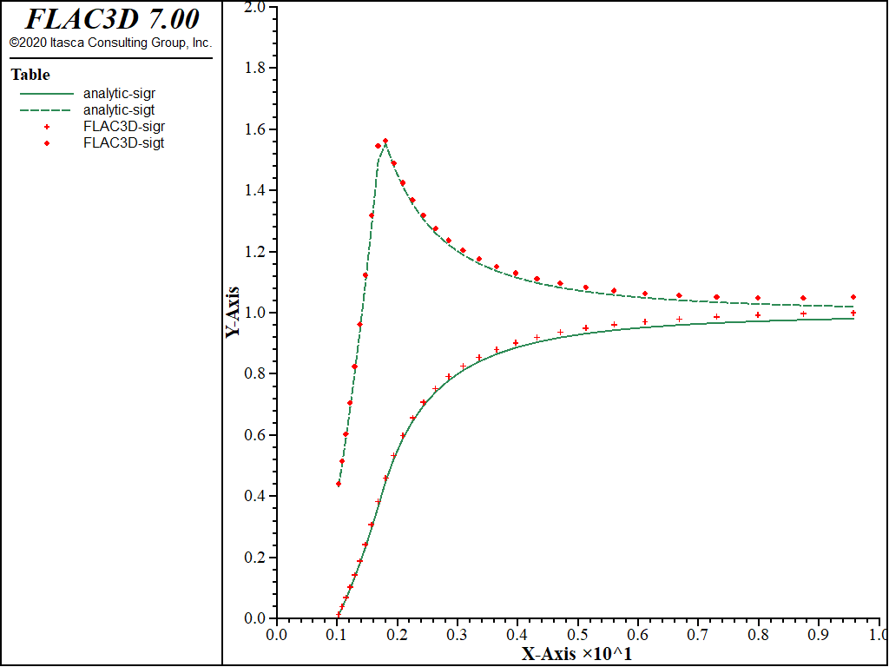
图 4：应力解比较——关联流动（解析值 = 线；数值 = 十字）。

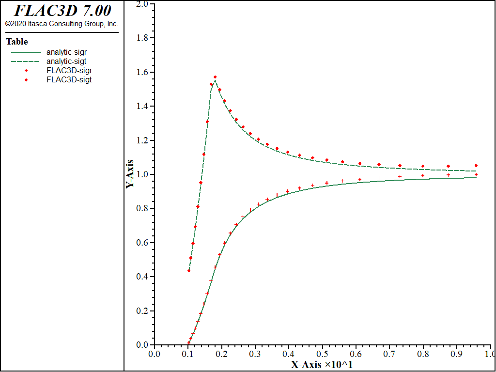
图 5：应力解比较——非关联流动（解析值 = 线；数值 = 十字）。

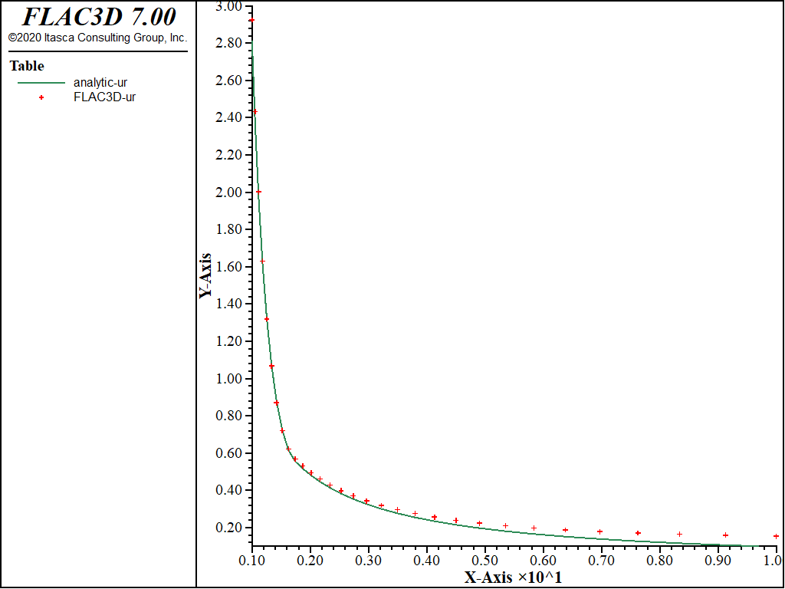
图 6：径向位移解比较——关联流动（解析值 = 线；数值 = 十字）。

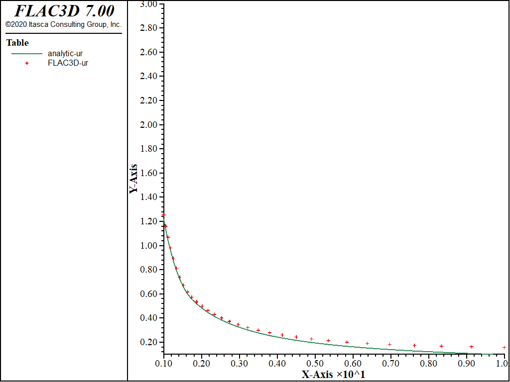
图 7：径向位移解比较——非关联流动（解析值 = 线；数值 = 十字）。
在整个网格范围内，应力和位移的平均相对误差小于 2.1%（非关联模型的位移除外，为 4.6%）。（请注意，若更恰当地处理远场条件，例如采用厚壁圆环的 Lamé 解，误差可以减小。）
作为示例，关联情形的位移云图和位移矢量见图 8（Figure 8）。

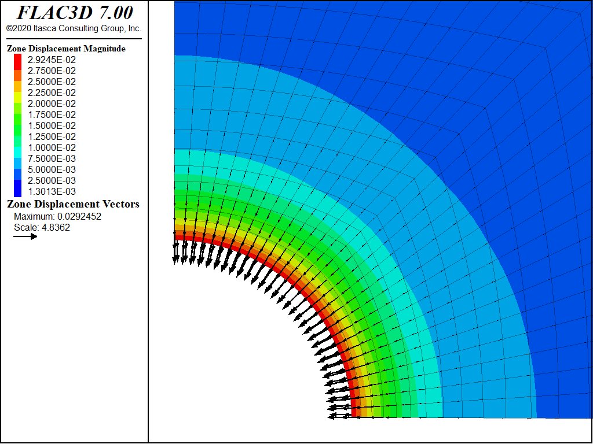
图 8：FLAC3D 位移云图与位移矢量——关联流动。
用于生成关联情形的文件“associated.dat”如下所示，“non-associated.dat”仅所赋位移值不同，可在该工程中找到。（关联情形中剪胀角为 30°。）文件“associated-nmd.dat”（如下所示）和“non-associated-nmd.dat”生成同样两种情形，但使用 FLAC3D 的节点混合离散（NMD）功能。对于 NMD 模型，采用全四面体网格（“nmd.f3grid”，其导入 FLAC3D，并由文件“create-tet-mesh.dat”生成）。
文件“sale.dat”利用 FISH 函数将数值解与解析解进行比较：
- nastr 计算：(i) 在距 \(x\) 轴最近的网格单元形心处 \(-{\sigma}_r/P_0\) 和 \(-{\sigma}_{\theta}/P_0\) 的数值解及相应的解析解；(ii) 整个网格中 \(-{\sigma}_r/P_0\) 和 \(-{\sigma}_{\theta}/P_0\) 的平均相对误差。
- nadis 计算：(i) 位于 \(x\) 轴上的网格点处 \(u_r/a\) 的数值解和解析解；(ii) 整个网格中位移 \(u_r/a\) 的平均相对误差。
对于关联和非关联两种流动法则，应力和位移的误差均在解析解的 2.1% 以内。图 9（Figure 9） 至图 12（Figure 12） 给出了 NMD 结果，与图 4（Figure 4） 至图 8（Figure 8）（全六面体网格的结果）直接对应。可以看出，结果非常相似。

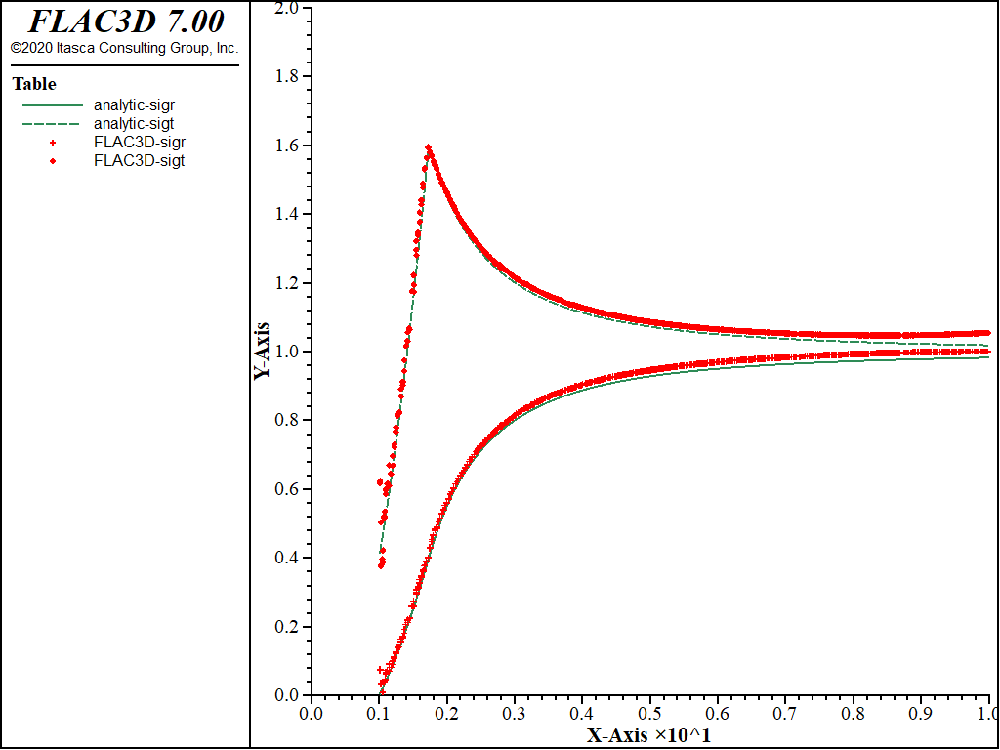
图 9：NMD 应力解比较——关联流动（解析值 = 线；数值 = 十字）。

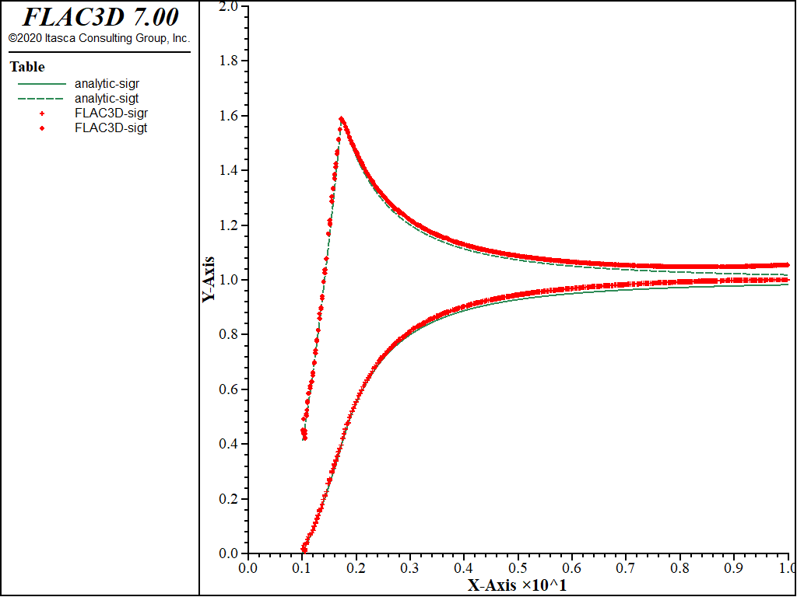
图 10：NMD 应力解比较——非关联流动（解析值 = 线；数值 = 十字）。

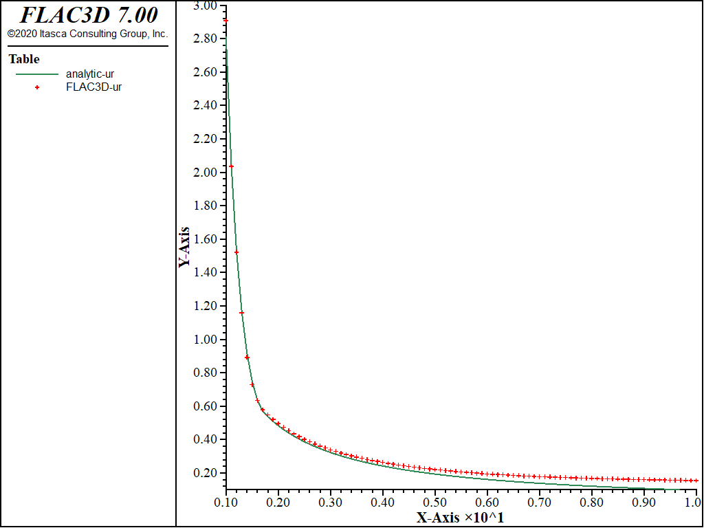
图 11：NMD 径向位移解比较——关联流动（解析值 = 线；数值 = 十字）。

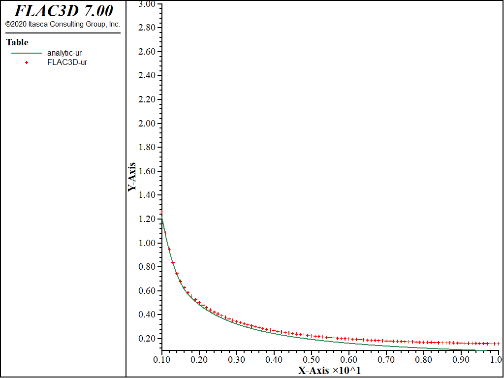
图 12：NMD 径向位移解比较——非关联流动（解析值 = 线；数值 = 十字）。

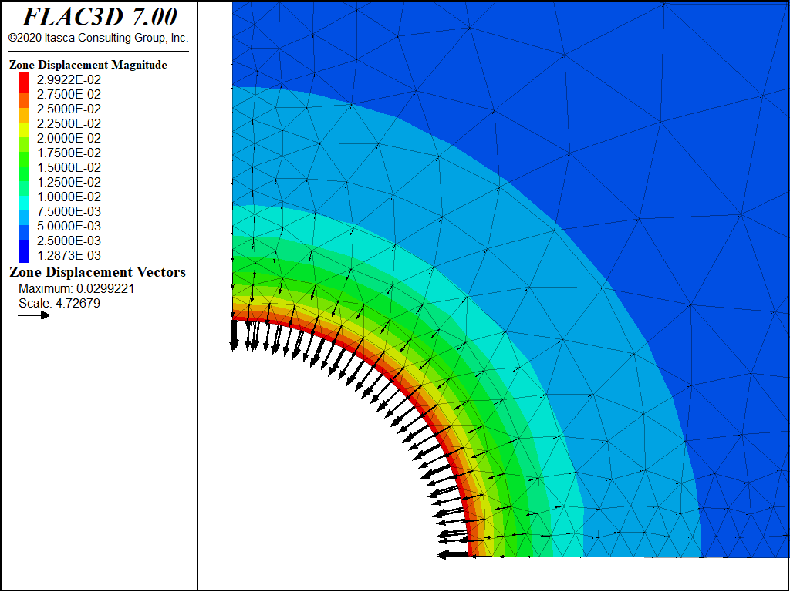
图 13：NMD FLAC3D 位移云图与位移矢量——关联流动。
参考文献
Salençon, J. “Contraction Quasi-Statique D’une Cavite a Symetrie Spherique Ou Cylindrique Dans Un Milieu Elastoplastique,” Annales Des Ponts Et Chaussees, 4, 231-236 (1969).
数据文件
associated.dat
;---------------------------------------------------------------------
; 预应力条件下长隧道的数值解
; 摩尔-库仑材料（salencon 问题）
; 关联与非关联塑性流动
;---------------------------------------------------------------------
model new
model large-strain off
; 创建网格单元
zone create radial-cylinder size 1 1 30 30 rat 1 1 1 1.1 ...
point 1 10 0 0 point 2 0 0.2 0 ...
point 3 0 0 10 dim 1 1 1 1
; 分配本构模型和属性
zone cmodel assign mohr-coulomb
zone property bul 3.9e9 shea 2.8e9 cohesion 3.45e6
zone property friction 30. dilation 30. tension 1.e10 ; 关联流动
; 初始化应力
zone initialize stress xx -30e6 yy -30e6 zz -30e6
; 施加边界条件
zone face apply velocity-normal 0.0 range union position-x 0 position-z 0
zone face apply velocity-normal 0.0 range union position-y 0 position-y 0.2
zone face apply stress-normal -30e6 range union position-x 10 position-z 10
; 记录若干历程
model history mechanical convergence
zone history displacement-x position (1,0,0)
zone history velocity-x position (1,0,0)
history interval 1
; 求解
model solve ratio-local 1e-4
; 保存模型
model save 'associated'
[io.out(string(zone.mech.ratio.local,0,' ',15))]
| 这些内容对您有帮助吗？… | FLAC3D © 2019, Itasca | 原文更新于 2020 年 10 月 8 日 |